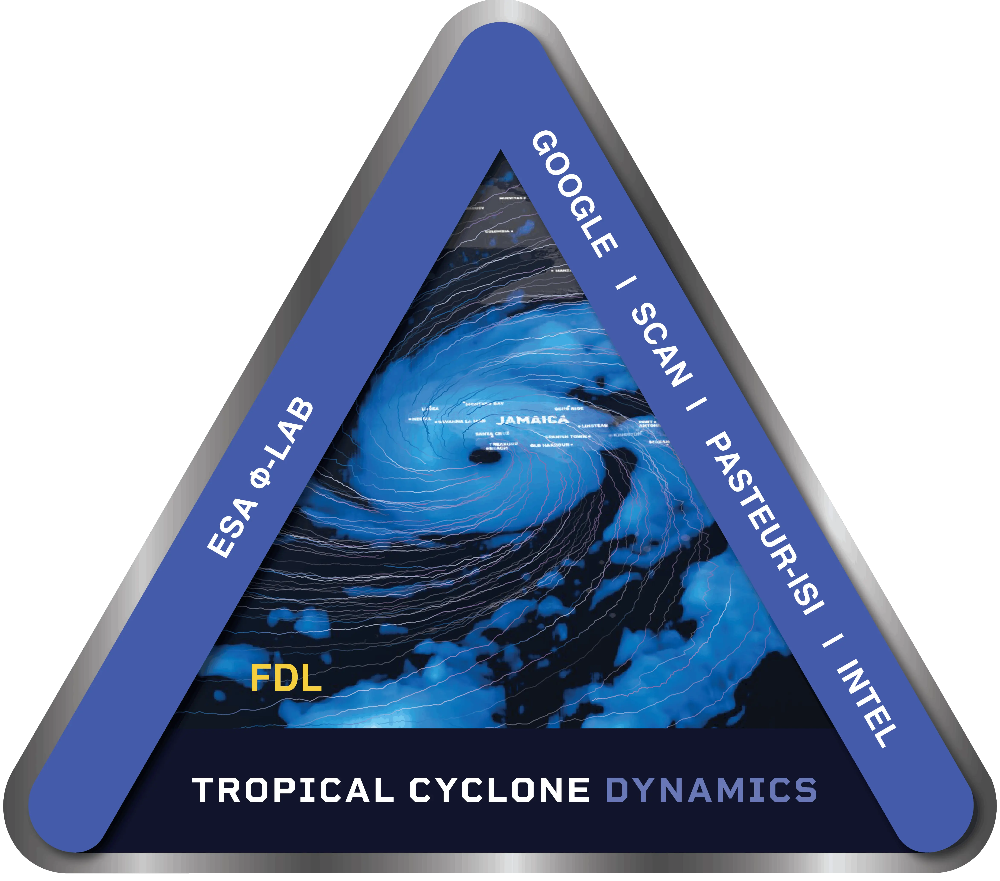

Loading storm data
Loading…—

Welcome to StormSense
Explore complete tropical-cyclone tracks and compare geostationary, PMW, and SAR observations with model-derived wind diagnostics.
The Frontier Development Lab (FDL.AI) is a division of Trillium Technologies Inc. in partnership with government agencies and leaders in AI such as Google Cloud and NVIDIA.
About the data
Nowcast shows inference at observation time; Forecast shows deterministic retrospective validation results at a fixed +12-hour lead. In Forecast animation, map time is the issue time and the blue highlighted point is valid 12 hours later. The highlighted Nowcast series is derived from the selected inference model; for UNet+MLP, Maximum wind is the corrected scalar while the remaining diagnostics come from the upstream UNet wind field. The selector does not change the map or summary cards. The cream reference on Maximum wind is the IBTrACS maximum sustained wind, with its classification shown in the hover details. The optional NWP overlay shows each available full-track forecast as a muted dashed line. All SAR swaths share a fixed 0–60+ m/s scale. PMW imagery uses the comparable vertically polarized 89–92 GHz band from AMSR2, GMI, and SSMIS. PMW and geostationary imagery use distinct color maps because they represent different physical measurements, while each retains fixed 190–292 K bounds; PMW no-data pixels are transparent. Use the map layer toggle to show or hide all fixed-scale CMI_C15 geostationary images together. Gray chart dots mark matched SAR fields; dashed lines interpolate visually between those sparse observations.
Preparing storm tracks…